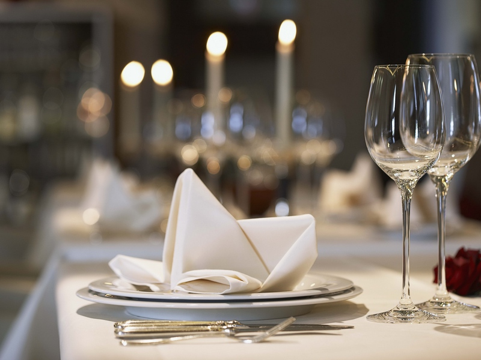
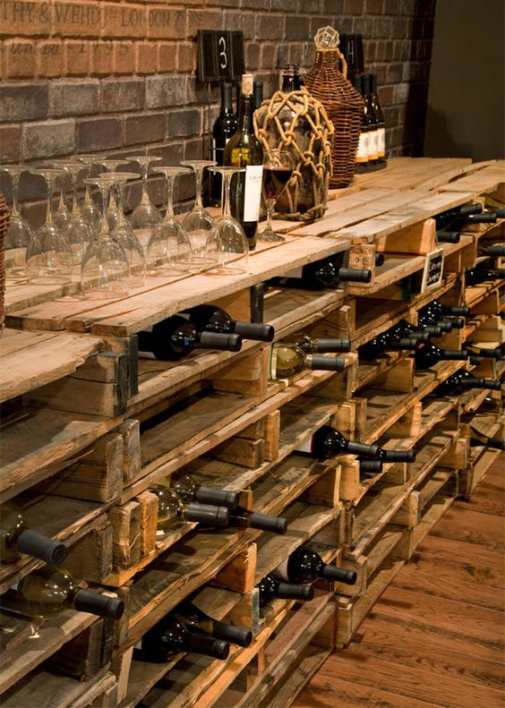

Casa de Placer
Osteria Italiana da vino
Про нас


CASA NORI
Сasa Nori (Дім Норі) — аутентична чіккеттерія-остерія
венеціана з традиційною італійською кухнею. В меню Ви
можете знайти не лише класичні страви італійської кухні,
але й страви з використанням інноваційних технологій.
Андреа Норі — шеф-патрон та автор концепції Casa Nori.
Наша історія починається у вересні 2016 року в
історичній частині Києва – на Подолі (вул.
Борисоглібська, 1). Наша концепція – створити дружні
відносини з гостями, щоб кожен відчував себе частиною
Casa Nori в сімейній, доброзичливій, але й професійній і
компетентній атмосфері. CASA NORI – не тільки місце для
зустрічі, а й місце, де можна відчути гармонію смаків,
уподобань і ароматів. На другому поверсі відкрита кухня,
де ви можете побачити приготування їжі, як у своєму
будинку – без жодного секрету. Наші страви – стародавні
спеціалітети Венето і Венеції і, звичайно ж, сімейні
рецепти, які Андреа з гордістю радий приготувати своїм
гостям. CASA NORI – перша справжня автентична
Cicchetteria Veneziana в Україні – пропонує широкий
вибір вин по келихах, Cicchetti (невеликі закуски з
м'яса, риби, сиру і овочів), традиційні страви і нові
інтерпретації шеф-патрона Андреа Норі котрий не може
пропустити жодного live-виступу кращих музикантів
столиці, що супроводжують наші «італійські» вечори.